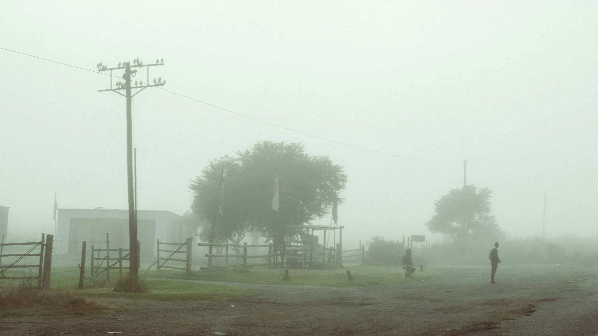

School & travel days
School name, requested start date and morning, return or daily coverage.
Prepare the information needed to assess route eligibility and agree the right journey.

School name, requested start date and morning, return or daily coverage.
Home area, proposed stop and authorized collection arrangements.
A reply contact and any approved alternative collector. Share sensitive details only through secure operator channels.
Discuss accessibility or assistance needs directly with the transport team.
Confirm whether the school and area have suitable coverage.
Gather student, guardian and collection information. Initial account creation does not need sensitive student data.
Review direction, service days, terms and any quote.
Confirm route, stop, timetable and start date before travel.
Use the correct profile, school, stop and travel direction.
Availability of bus passes, GPS and emergency notices depends on the operator’s connected systems.
Review coverage and journey records through the approved parent service.
Begin with the school and pickup area, without sharing sensitive student details.